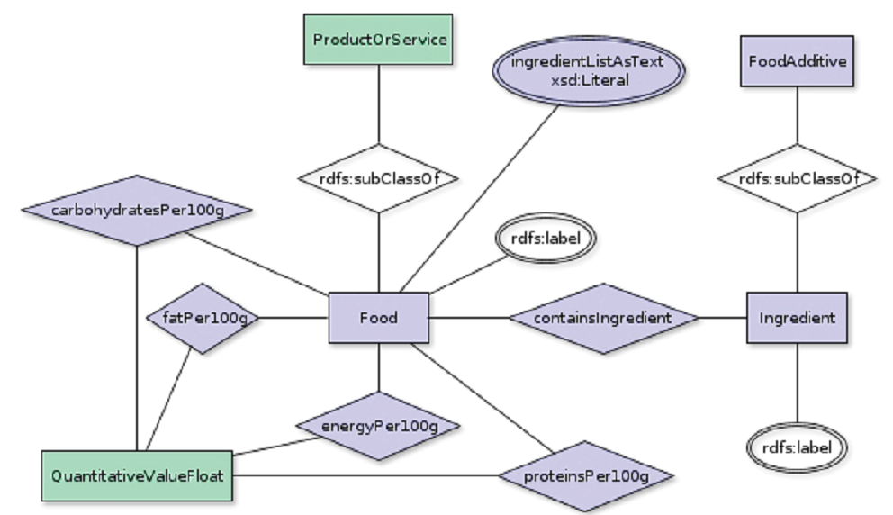

The ability to derive logically reasoned conclusions, opportunities of structured search and representation of data in a strictly formalized way provide broad capabilities in many domain areas, operating data. Such a common and integral area of life as food, and analysis of food information, its ingredients, both natural and artificial, in particular, are no exception. Drawing up a carte du jour and diet plans based on data derived has an undoubted impact on human health and appearance. The structural unit of food and nutrition system is foodstuff which contains a number of raw ingredients, artificial additives, has certain properties that effect human in some way. Moreover, each foodstuff is a unit having metrics. Content of proteins, fats, carbohydrates per unit of mass and food value are the most common of them. Thus, the information on food can be formalized and represented in the light of semantic graph, based on properties of foodstuffs and their contents, which is a sort of knowledge base as a part of intellectual system. Not only allows the graph presenting data based on food properties and contents to consumer, it also enables automated expert analysis with preferences, contra-indications and other consumer requirements considered.
FOODpedia project is an attempt to extract information on foodstuff seen on the territory of Russia from open data sources such as on-line catalogues, mainly goodsmatrix.ru and organize a semantic graph afterwards. Ontology is used to describe and represent data in a structured way and to provide an interface.
FOODontology is an extended version on GoodsRelations ontology. FOODontology provides a detailed information on foodstuff in terms of properties such as name, food description, ingredients, store conditions, bar-code, weight, shelf life period etc. Conceptual model of FOODontology is presented below to demonstrate relations between classes and properties. The most significant elements of the model are the followings:

Conceptual model of FOODontology
In the context of this project a basis for building new source of linked data is laid, the semantic graph mentioned and described above is organised. It contains around 60 thousands of foodstuff items seen in supermarkets on the territory of Russia. Проведены работы по частичному парсингу и связыванию с вершинанами графа - ингредиентами и химическими добавками. Для пользователей придоставлен интерфейс поиска по графу. Однако, на этом работа не закончена. Ведутся дальнейшие работы по кластеризации ингрдиентов, указанных в свободной форме, и обогащению графа, а также дальнейшая интеграция датасета с другими датасетами, разработка краудсорсинговой платформы для добавления в граф новых ресурсов.